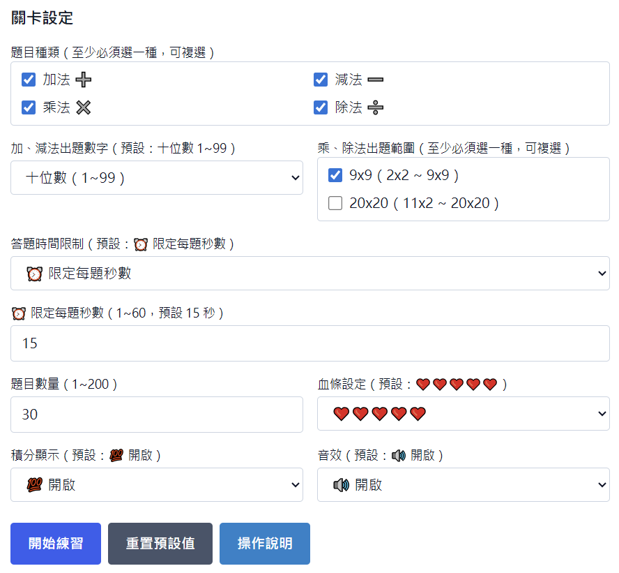
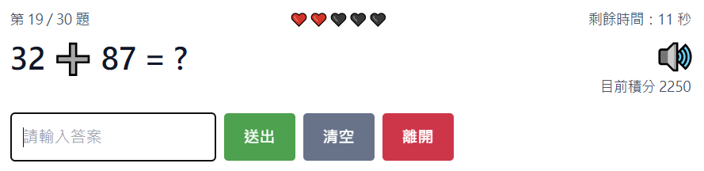
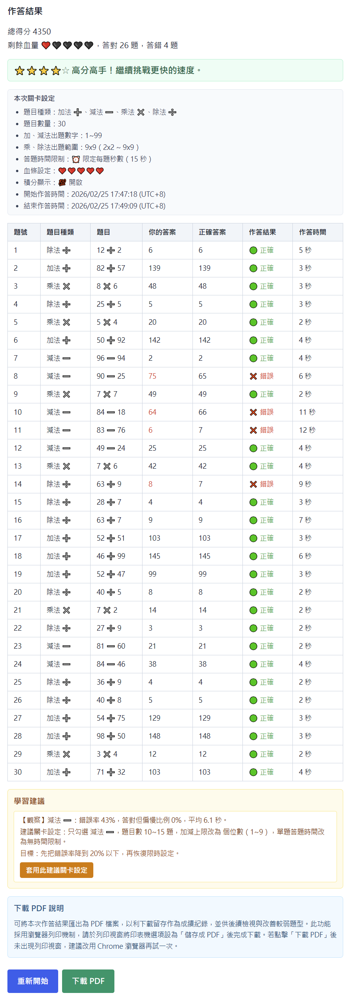
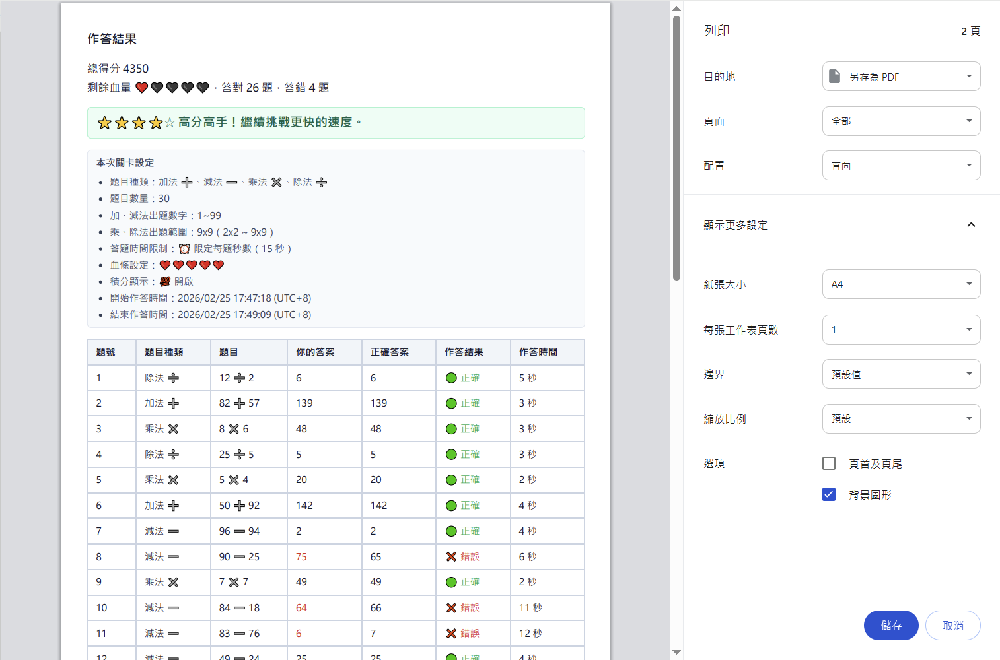
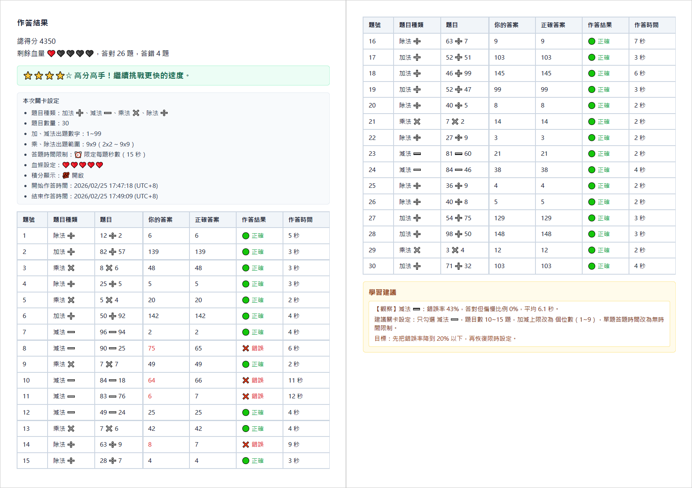

算你厲害｜操作說明
這份說明給第一次使用的家長與孩子。照著下面步驟操作，就能馬上開始練習。
1. 這個工具可以做什麼
- 練習加法、減法、乘法、除法。
- 可自訂題目數量、時間限制、血條、音效與積分顯示。
- 完成後會顯示成績、每題明細與學習建議。
- 結果頁可下載成 PDF 留存。
2. 一分鐘快速開始
- 先在「關卡設定」選好題目種類與題目數量。
- 點擊「開始練習」。
- 看到題目後輸入答案，按「送出」（或直接按 Enter）。
- 全部完成後到結果頁查看答對答錯與學習建議。
- 如果回到設定頁看到「偵測到新版本」，按「立即更新」即可套用最新版本。
3. 關卡設定怎麼選
- 題目種類：加、減、乘、除可複選，至少選一種。
- 加、減法出題數字：可選個位數、十位數、百位數。
- 乘、除法出題範圍：可選 9x9、20x20（可複選）。
- 答題時間限制：可選「限定每題秒數」或「無時間限制」。
- 血條設定：答錯或超時會扣血，血量歸零會結束。
- 積分顯示：可決定畫面是否顯示目前積分與總得分。
- 音效：可開啟或關閉作答音效。
- 「說明」區塊最後會顯示目前程式版本（例如：20260302.2）。
- 若設定太亂，可按「重置預設值」回到預設設定。

4. 作答時怎麼操作
- 輸入答案後按「送出」，系統會自動進下一題。
- 答案輸入僅接受數字（0~9），其他符號會自動忽略。
- 按「清空」可清掉目前輸入內容。
- 按「離開」可提前結束並直接看結果。
- 若有限時，時間到會判定該題超時。
- 畫面上會顯示目前題號、剩餘時間、血量與積分（可關閉顯示）。
- 切換到作答頁、結果頁，或按「重新開始」回設定頁時，畫面都會自動回到頂部。

5. 看懂結果頁
- 會看到答對題數、答錯題數與鼓勵文字。
- 每題明細可查看你的答案、正確答案與作答時間。
- 「學習建議」會依你的作答狀況給下一輪練習方向。
- 「本次關卡設定」最後會顯示程式版本（例如：20260302.2）。
- 可按「重新開始」回到設定頁再練一次。

6. 下載 PDF（成績留存）
- 在結果頁點「下載 PDF」。
- 列印視窗開啟後，將印表機選成「儲存成 PDF」。
- 確認頁面後儲存即可。
- 若是 Android/iOS，檔名可能要手動調整。


7. 常見問題
- 按了下載 PDF 沒反應：建議改用 Chrome 再試一次。
- 血量很快歸零：可把血條改成「無敵」或增加愛心數。
- 題目太難：先把題目種類縮小為單一題型，並降低數字範圍。
- 為什麼畫面和別人的不一樣：可能是你停留在舊分頁，回到設定頁看到更新提示後點「立即更新」。